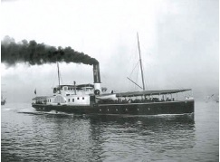

Boğaziçi’nde yolcu taşımacılığı yüzyıllar boyunca bir, iki, üç veya beş çifte kayıklar ve Pazar kayıkları ile yapılmıştır. Hem yük, hem de yolcu götüren Pazar kayıkları da Boğaziçi köylerinin cami ve mescitlerine vakıf olarak hayır sahipleri tarafında yaptırılır, kürekçi ücretleri ödendikten sonra, geliri ile bu ibadethanelerin ufak tefek tamirleri yaptırılırdı. Kırım Savaşı’ndan sonra iki İngiliz girişimci Boğaziçi’nde buharlı vapur işlettiler... Fakat bu pek kısa sürdü, hükümet işlerine engel oldu ve İstanbul ile Boğaziçi köyleri arasına iki tersane vapuru tahsis etti. Bunlardan biri Rumeli kıyısına, diğeri Anadolu kıyısına olmak üzere günde ancak iki sefer yapılıyordu. Geceleri Boğaz’da demirliyorlar, sabahleyin köylerden yolcuları toplayıp İstanbul’da Sirkeci iskelesine geliyorlar, akşamları da Boğaz’a dönüyorlardı. Boğaz köylerinde vapur iskeleleri yoktu, halk vapurlara kayıkla gidiyor ve köy önünde duran vapurlardan, aynı şekilde kayıklara binip dönüyordu... Tıpkı açıkta demirlemiş posta gemileri gibi... Son durak olan köy Rumeli yakasında İstinye, Anadolu yakasında Kanlıca idi. Vapurlar bu köylerden alacakaranlıkta, akşamları da Sirkeci iskelesinden ezana doğru, alaturka saat on bir sularında kalkıyordu. Asıl ilginç olan şu ki; bu vapurlarda bilet usulü yoktu. Babıâli’de Beylikçi Odası’nda bir abone defteri açılmıştı, herkes aylık üzerinden ücretini peşin yatırıyordu. Bu uygulamanın şimdiki aylık abonman kartına çok benzemesi rastlantı değildir. Tespit edilen ücret cetveli de şöyledir:
• İstanbul’dan Kandilli’ye ve Rumelihisarı’na gidecek bir efendi gidip gelme: ayda 250 kuruş.
• İstanbul’dan Kanlıca’ya ve İstinye’ye gidecek bir efendi gidip gelme ayda. 300 kuruş. Bir efendi bu ücretle yanında bir uşak götürebilir, bir uşak daha götürecek olursa ikinci uşak için 120 kuruş daha öder. Bir efendi yanında ikiden fazla uşak götürecek olursa, ikiden fazlası için toplu para ödemez, bu fazla uşaklar için köylere çıktığında orada bekleyecek memura adam başına 100’er para öder.
• Sair ahalinden, Beylikçi Odası’na para yatırmayıp da icabında vapurla gidip gelmek isteyen her seferinde karaya çıktığında görevli memura, Kandilli ile Rumelihisarı için 100’er para, Kanlıca ile İstinye için 3’er kuruş verir.
Şirket-i Hayriye’nin 1854’teki kuruluşu, Boğaziçi trafiğinde büyük bir yenilik olmuştur. Böyle bir şirketin kurulması gereğini ilk düşünenler de iki Türk veziri, Sadrazam Keçecizade Fuat Paşa ile Adliye Nazırı Müverrih Cevdet Paşa’dır... O zamanlar her ikisi de Babıâli efendisi bulunuyormuş. Bir yaz Bursa’ya gitmişler. Kaplıcada, bellerinde peştamal, havuz kenarına oturup sohbet ederlerken söz Boğaz sefalarına, oradan tersane vapurlarının düzensizliğine gelmiş. İki genç adam heyecana kapılmışlar. Hemen kaplıcanın soğukluğuna çıkıp hamamcılardan hokka kalem ve kâğıt istemişler ve Boğaziçi’nde vapur işletmek için kurulacak bir şirketin ilk nizamname müsvettesini kaplıca soğukluğunda, ayaklarında nalın, bellerinde peştamal, çıplak hamam kılığı ile yazmışlar...

Şirket-i Hayriye vapurlarından